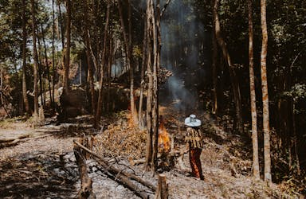

O que são queimadas?
As queimadas são fenômenos naturais que podem surgir em áreas secas, de clima árido e semiárido, que contenham vegetação. Com a ajuda do vento e da baixa umidade, fagulhas podem surgir de forma natural, causando incêndios que, em alguns casos, podem chegar a proporções enormes.
Consequências das Queimadas
As queimadas podem ter diversos impactos negativos, incluindo:
- Prejuízos à fauna e à flora
- Redução da cobertura vegetal
- Infertilidade do solo
- Qualidade do ar
- Doenças respiratórias
- Aquecimento global
Prevenção de Queimadas
Existem várias medidas que podem ser tomadas para prevenir as queimadas:
- Monitoramento e detecção precoce
- Educação pública sobre riscos e práticas seguras
- Regulamentação das práticas de queima controlada
- Supressão de incêndios com técnicas adequadas